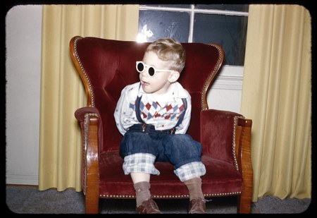
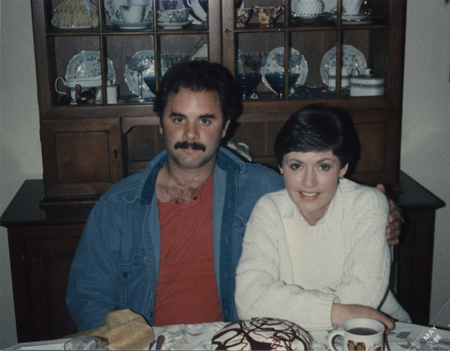

Skip to content
loading 1965-2004
1965-2004
Back to the contact sheet
Turn over
moore
archives
1900–2004
James E. Moore
&
Emily M. Moore
ABOUT THE PROJECT
BIOS
EARLY PHOTOS
BEFORE THE WAR
WWII
AFTER THE WAR
KODACHROMES
LANDSCAPES
6 x 9 cm NEGS
1965-2004
SHEET 1
SHEET 2
1965-2004, no. 8
1965-2004, no. 11
1965-2004, 3 of 12

1965-2004, 4 of 12
1965-2004, 5 of 12
1965-2004, 6 of 12

1965-2004, 7 of 12
1965-2004, 8 of 12
1965-2004, 9 of 12
1965-2004, 10 of 12
1965-2004, 11 of 12
1965-2004, 12 of 12